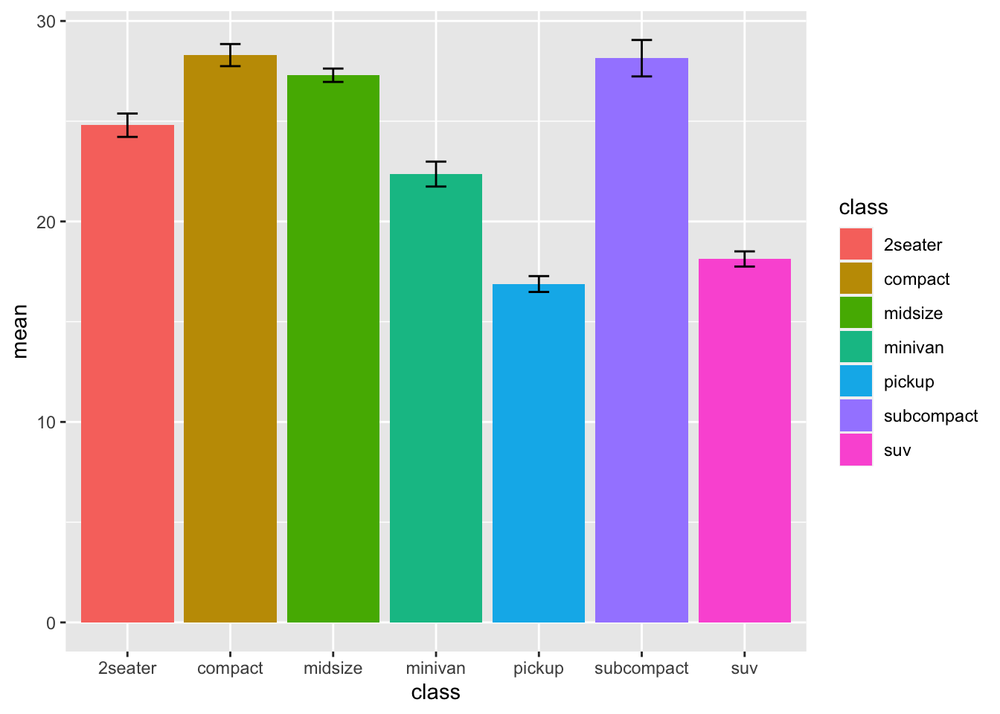

Chapter 2 Hello bookdown
All chapters start with a first-level heading followed by your chapter title, like the line above. There should be only one first-level heading (#) per .Rmd file.
2.1 A section
All chapter sections start with a second-level (##) or higher heading followed by your section title, like the sections above and below here. You can have as many as you want within a chapter.
An unnumbered section
Chapters and sections are numbered by default. To un-number a heading, add a {.unnumbered} or the shorter {-} at the end of the heading, like in this section.
getting data in to r from excel
#library(readxl)
#data <- read_excel("FILE_PATH/NAME")#put files in githib for storage how to import a csv
library(readr)
# iris <- read_csv("/Users/zacharydawson/Desktop/newbook-r/iris.csv")head data or view the first few lines of data
head(Loblolly)## height age Seed
## 1 4.51 3 301
## 15 10.89 5 301
## 29 28.72 10 301
## 43 41.74 15 301
## 57 52.70 20 301
## 71 60.92 25 301# describe(Loblolly)
# In RStudio displays information about the data set and its source in the
# Help Windownrow(Loblolly)## [1] 84length(unique(Loblolly$Seed))## [1] 14sort(unique(Loblolly$Seed))## [1] 329 327 325 307 331 311 315 321 319 301 323 309 303 305
## 14 Levels: 329 < 327 < 325 < 307 < 331 < 311 < 315 < 321 < 319 < ... < 305sumarise data
summary(OrchardSprays)## decrease rowpos colpos treatment
## Min. : 2.00 Min. :1.00 Min. :1.00 A : 8
## 1st Qu.: 12.75 1st Qu.:2.75 1st Qu.:2.75 B : 8
## Median : 41.00 Median :4.50 Median :4.50 C : 8
## Mean : 45.42 Mean :4.50 Mean :4.50 D : 8
## 3rd Qu.: 72.00 3rd Qu.:6.25 3rd Qu.:6.25 E : 8
## Max. :130.00 Max. :8.00 Max. :8.00 F : 8
## (Other):16#group the length and the width is seperate data sets both with the variaty still there and then merge back tougher how to
x <- data()
# x is now a list
y <- as.data.frame(x$results)
y <- y[,3:4]
# This gives a data frame of name and description, 104 data setslibrary(tibble)
library(tidyr)
#data
mtcars1 <- mtcars
head(mtcars1)## mpg cyl disp hp drat wt qsec vs am gear carb
## Mazda RX4 21.0 6 160 110 3.90 2.620 16.46 0 1 4 4
## Mazda RX4 Wag 21.0 6 160 110 3.90 2.875 17.02 0 1 4 4
## Datsun 710 22.8 4 108 93 3.85 2.320 18.61 1 1 4 1
## Hornet 4 Drive 21.4 6 258 110 3.08 3.215 19.44 1 0 3 1
## Hornet Sportabout 18.7 8 360 175 3.15 3.440 17.02 0 0 3 2
## Valiant 18.1 6 225 105 2.76 3.460 20.22 1 0 3 1#pivot_longer
mt_long <- pivot_longer(mtcars1,
cols = mpg:carb,
names_to = "Category",
values_to = "Value"
)
head(mt_long)## # A tibble: 6 × 2
## Category Value
## <chr> <dbl>
## 1 mpg 21
## 2 cyl 6
## 3 disp 160
## 4 hp 110
## 5 drat 3.9
## 6 wt 2.62library(ggplot2)
# data
data <- data.frame(
name=c("A","B","C","D","E") ,
value=c(3,12,5,18,45)
)
# Barplot
ggplot(data, aes(x=name, y=value)) +
geom_bar(stat = "identity")
library(ggplot2)
ggplot(data= diamonds)+
geom_bar(
mapping = aes(x = cut, fill = clarity),
position = "dodge"
)
library(ggplot2)
ggplot(data = mpg) +
geom_point(mapping = aes(x = displ, y = hwy, color = class))#Colour also works
ggplot(data = mpg, mapping = aes(x = displ,y = hwy)) +
geom_point(mapping = aes(color = class)) +
geom_smooth()## `geom_smooth()` using method = 'loess' and formula 'y ~ x'
2.2 R Markdown
library(ggplot2)
library(dplyr)##
## Attaching package: 'dplyr'## The following objects are masked from 'package:stats':
##
## filter, lag## The following objects are masked from 'package:base':
##
## intersect, setdiff, setequal, union2.3 data
data(mpg)
means <- mpg %>% group_by(class) %>% summarise(mean = mean(hwy), se = sd(hwy)/sqrt(n()))
means## # A tibble: 7 × 3
## class mean se
## <chr> <dbl> <dbl>
## 1 2seater 24.8 0.583
## 2 compact 28.3 0.552
## 3 midsize 27.3 0.334
## 4 minivan 22.4 0.622
## 5 pickup 16.9 0.396
## 6 subcompact 28.1 0.909
## 7 suv 18.1 0.3782.4 ploting se
ggplot(means, aes(x = class, y = mean, fill = class)) +
geom_col(position = "dodge") +
geom_errorbar(aes(ymin = mean - se, ymax = mean + se),
position = position_dodge(width = 0.9),
width = 0.2)
2.4.0.0.0.0.0.0.0.0.0.0.0.0.0.0.0.0.0.0.0.0.0.0.0.0.0.0.0.0.0.0.0.0.0.0.0.0.0.0.0.0.0.0.0.0.0.0.0.0.0.0.0.0.0.0.0.0.0.0.0.0.0.0.0.0.0.0.0.0.0.0.0.0.0.0.0.0.0.1